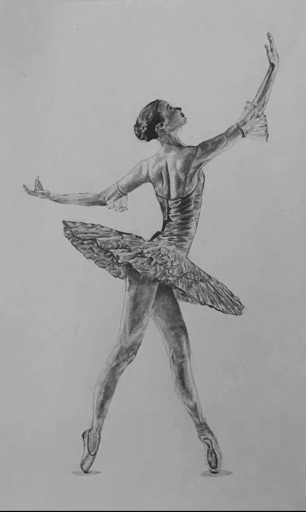
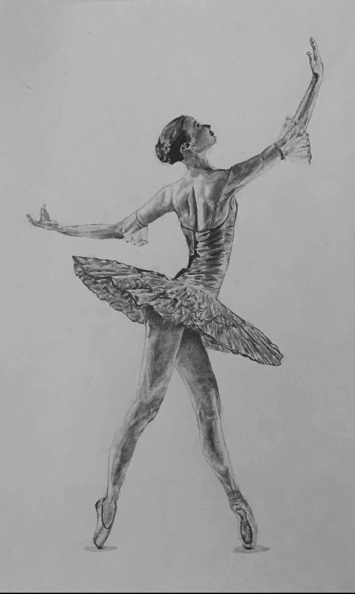
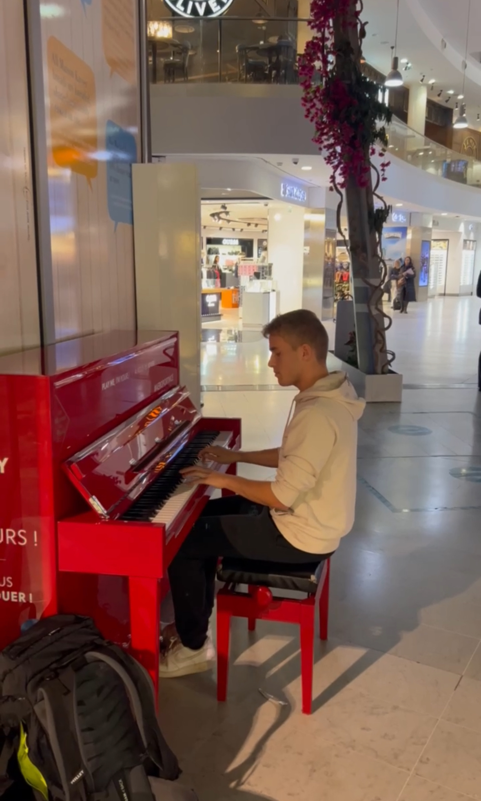

À propos de moi
L'inforamtique me passione mais en dehors de mon travail, je mène une vie active et créative, dédiée à plusieurs passions qui enrichissent mon quotidien.
Sport
Le sport occupe une place importante dans ma vie. Athlétisme, triathlon, course d’orientation : je participe à divers événements nationaux et internationaux.


Dessin
Le dessin est pour moi un moyen d’expression et de relaxation. J’aime capturer des idées et des paysages sur papier, développant mes compétences artistiques.
 


Musique
La musique, et en particulier le piano, occupe une place privilégiée dans ma vie. Jouer me permet de me détendre et d’exprimer ma créativité.
